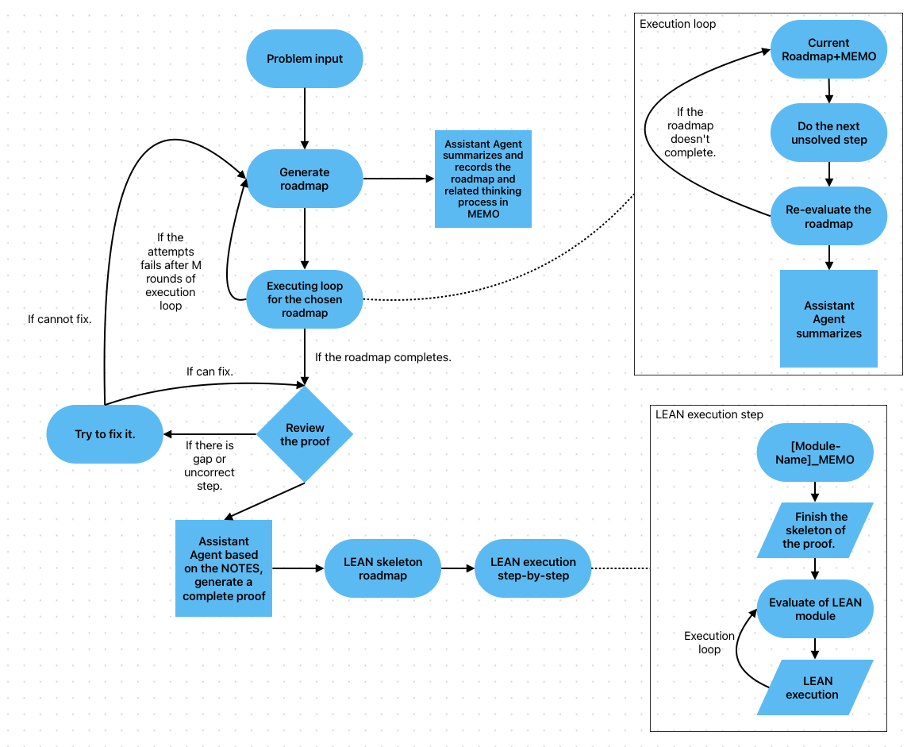

Math Agent and Solution to RMM P6
Based on the multi-agent collaboration and harness engineering in Claude Code(CC), I have developed an agentic workflow for automatic math research. The overview architecture of the workflow is attached below, which is designed by human mathematicians’ research paradigm and refined by using the advantages from the leaked CC.
The ability improvement for LLM is incredible. My current question solving experience contains: 1. deepseek chat solved IMO 2024 Shortlist N1 successfully, which deepseek reasoner faiuled in single session: Find all positive integers n such that for every positive divisor d of n, either d + 1 divides n or d + 1 is prime. 2. gemini 3.1 pro preview solved RMM P6 successfully, which chatgpt 5.4 pro in the web interface failed to solve it completely and gemini 3.1 pro in the web interface failed to do any progress.

The shortage of the project is on LEAN proof, but the reason is the models’ ability. For most models, LEAN proof is still challenging. In my experience, formalizing a non-trivial proof without sorry and uncommon axioms usually requires 10,000+ lines LEAN codes and is difficult for most LLMs. The best CLI agent for LEAN is Codex GPT 5.4 xhigh. CC Opus 4.6 can write some simpler LEAN projects but Codex is significantly better. Gemini 3 Pro for LEAN writing could be disaster (gemini lake cleaned my project after building). Therefore, the Phase 2 (formalization proof) of this project is not recommended without the latest GPT or Claude API. Many projects that claim they can write LEAN code automatically probably use excess axioms to eliminate sorry or require strong models.
Below is the proof of RMM P6.
RMM P6 and solution
Let \(k > 1\) be an integer, and let \(S\) be the set of all \((k+1)\)-tuples \(X = (x_1, \dots, x_{k+1})\) of integers with \(1 \le x_1 < \dots < x_{k+1} \le k^2 + 1\). For a permutation \(\sigma\) of \(\{1, 2, \dots, k^2 + 1\}\), call an element \(X\) of \(S\) \(\sigma\)-good if \(\sigma(x_1), \sigma(x_2), \dots, \sigma(x_{k+1})\) is monotone. Prove that \[\min_{1 \le i \le k} \left\lfloor \frac{x_i}{i} \right\rfloor + \min_{2 \le i \le k+1} \left\lfloor \frac{k^2 + 2 - x_i}{k + 2 - i} \right\rfloor \ge k + 1\] if and only if there exists a permutation \(\sigma\) such that \(X\) is the unique \(\sigma\)-good tuple in \(S\).
Set \(n = k^2 + 1\). For \(X = (x_1, \dots, x_{k+1}) \in S\), define
\[A = \min_{1 \le i \le k} \left\lfloor \frac{x_i}{i} \right\rfloor, \qquad B = \min_{2 \le i \le k+1} \left\lfloor \frac{n+1-x_i}{k+2-i} \right\rfloor.\]
We are to prove that \(A + B \ge k+1\) if and only if there exists a permutation \(\sigma\) such that \(X\) is the unique \(\sigma\)-good tuple.
Part I: Necessity
Assume there exists a permutation \(\sigma\) such that \(X\) is the unique \(\sigma\)-good tuple.
By replacing \(\sigma\) with \(n+1-\sigma\) if necessary, we may assume without loss of generality that:
- \(X\) is the unique increasing subsequence of length \(k+1\);
- there is no decreasing subsequence of length \(k+1\).
Thus \(\mathrm{LIS} = k+1\) and \(\mathrm{LDS} = k\).
1. The level–depth grid
For each position \(y \in \{1, \dots, n\}\), define
\[\ell(y) = \text{length of the longest increasing subsequence ending at } y,\] \[\delta(y) = \text{length of the longest decreasing subsequence ending at } y.\]
For \(1 \le i \le k+1\), write \(E_i = \{y : \ell(y) = i\}\).
Claim 1. \(E_{k+1} = \{x_{k+1}\}\) and \(|E_i| = k\) for \(1 \le i \le k\).
Proof. Each \(E_i\) is an antichain, so \(|E_i| \le k\) (since there is no decreasing subsequence of length \(k+1\)). Since \(\ell(x_{k+1}) = k+1\), we have \(E_{k+1} \neq \varnothing\). If \(y \in E_{k+1}\), there exists an increasing subsequence of length \(k+1\) ending at \(y\); by uniqueness, it must equal \(X\), so \(y = x_{k+1}\). Hence \(E_{k+1} = \{x_{k+1}\}\). Then
\[\sum_{i=1}^{k} |E_i| = n - 1 = k^2,\]
and since each \(|E_i| \le k\), we must have \(|E_i| = k\) for all \(1 \le i \le k\). \(\square\)
Claim 2. If \(E_i = \{y_1 < \cdots < y_k\}\), then \(\sigma(y_1) > \sigma(y_2) > \cdots > \sigma(y_k)\) and \(\delta(y_j) = j\) for \(1 \le j \le k\).
Proof. Since \(E_i\) is an antichain, the values must be strictly decreasing when the positions are ordered increasingly. For \(y_j\): the sequence \(y_1, \dots, y_j\) is itself a decreasing subsequence, so \(\delta(y_j) \ge j\); if \(\delta(y_j) > j\), take a decreasing subsequence of length \(\delta(y_j)\) ending at \(y_j\) and append \(y_{j+1}, \dots, y_k\), obtaining a decreasing subsequence of length \(\delta(y_j) + (k-j) > k\), a contradiction. Thus \(\delta(y_j) = j\). \(\square\)
Hence the map \(y \mapsto (\ell(y), \delta(y))\) is a bijection from \(\{1, \dots, n\} \setminus \{x_{k+1}\}\) to \(\{1, \dots, k\}^2\).
2. The depth of \(x_i\) is constant
Let \(d_i = \delta(x_i)\). We show \(d_1 = d_2 = \cdots = d_{k+1}\).
It suffices to show \(d_{i-1} = d_i\) for \(2 \le i \le k+1\).
In \(E_{i-1}\), there is exactly one element \(y\) with \(\delta(y) = d_i\). We claim \(y = x_{i-1}\).
Suppose \(y \neq x_{i-1}\); we consider four cases:
- If \(y < x_i\) and \(\sigma(y) > \sigma(x_i)\): the decreasing subsequence of length \(d_i\) ending at \(y\) can be extended by \(x_i\), giving \(\delta(x_i) \ge d_i + 1\), a contradiction.
- If \(y < x_i\) and \(\sigma(y) < \sigma(x_i)\): take an increasing subsequence of length \(i-1\) ending at \(y\), then append \(x_i, x_{i+1}, \dots, x_{k+1}\) to get an increasing subsequence of length \(k+1\); by uniqueness it must equal \(X\), so \(y = x_{i-1}\), a contradiction.
- If \(y > x_i\) and \(\sigma(y) > \sigma(x_i)\): the increasing subsequence of length \(i\) ending at \(x_i\) can be extended by \(y\), giving \(\ell(y) \ge i+1\), contradicting \(y \in E_{i-1}\).
- If \(y > x_i\) and \(\sigma(y) < \sigma(x_i)\): the decreasing subsequence of length \(d_i\) ending at \(x_i\) can be extended by \(y\), giving \(\delta(y) \ge d_i + 1\), a contradiction.
Therefore \(y = x_{i-1}\), so \(d_{i-1} = d_i\).
Thus there exists \(A^* \in \{1, \dots, k\}\) such that \(\delta(x_1) = \cdots = \delta(x_{k+1}) = A^*\).
3. Lower bound: \(x_i \ge iA^*\)
Fix \(1 \le i \le k\). Consider the set
\[L_i = \{y : \ell(y) \le i,\ \delta(y) \le A^*\}.\]
By the grid bijection, each level \(1, \dots, i\) contributes exactly \(A^*\) points with \(\delta \le A^*\), so \(|L_i| = iA^*\).
We claim every \(y \in L_i\) satisfies \(y \le x_i\). If \(y > x_i\):
- If \(\sigma(y) > \sigma(x_i)\): then \(\ell(y) \ge \ell(x_i) + 1 = i+1\), contradicting \(\ell(y) \le i\).
- If \(\sigma(y) < \sigma(x_i)\): the decreasing subsequence of length \(A^*\) ending at \(x_i\) can be extended by \(y\), giving \(\delta(y) \ge A^*+1\), contradicting \(\delta(y) \le A^*\).
Therefore \(L_i \subseteq \{1, \dots, x_i\}\), so \(x_i \ge |L_i| = iA^*\). Hence
\[\left\lfloor \frac{x_i}{i} \right\rfloor \ge A^* \qquad (1 \le i \le k).\]
4. Upper bound: \(x_i \le n+1-(k+2-i)(k+1-A^*)\)
Fix \(2 \le i \le k+1\). Consider the set
\[U_i = \{y : \ell(y) \ge i,\ \delta(y) \ge A^*\} \setminus \{x_i\}.\]
For each level \(i, i+1, \dots, k\), exactly \(k - A^* + 1\) points satisfy \(\delta \ge A^*\), and \(x_{k+1}\) also qualifies; removing \(x_i\) itself gives \(|U_i| = (k-i+1)(k-A^*+1)\).
We claim every \(y \in U_i\) satisfies \(y > x_i\). If \(y < x_i\):
- If \(\sigma(y) < \sigma(x_i)\): then \(\ell(x_i) \ge \ell(y)+1 \ge i+1\), a contradiction.
- If \(\sigma(y) > \sigma(x_i)\): then \(\delta(x_i) \ge \delta(y)+1 \ge A^*+1\), a contradiction.
Now consider \(V_i = \{y \in E_{i-1} : \delta(y) \ge A^*+1\}\). Clearly \(|V_i| = k - A^*\). We claim every \(y \in V_i\) satisfies \(y > x_i\). If \(y < x_i\):
- If \(\sigma(y) > \sigma(x_i)\): then \(\delta(x_i) \ge \delta(y)+1 \ge A^*+2\), a contradiction.
- If \(\sigma(y) < \sigma(x_i)\): take an increasing subsequence of length \(i-1\) ending at \(y\), append \(x_i, x_{i+1}, \dots, x_{k+1}\) to get an increasing subsequence of length \(k+1\); by uniqueness it equals \(X\), so \(y = x_{i-1}\), but \(\delta(x_{i-1}) = A^* < A^*+1 \le \delta(y)\), a contradiction.
Since \(U_i\) and \(V_i\) are disjoint (the former has \(\ell \ge i\), the latter has \(\ell = i-1\)), there are at least
\[|U_i| + |V_i| = (k-i+1)(k-A^*+1) + (k-A^*) = (k+2-i)(k+1-A^*) - 1\]
positions strictly after \(x_i\). Therefore
\[x_i \le n - \bigl((k+2-i)(k+1-A^*)-1\bigr) = n+1-(k+2-i)(k+1-A^*).\]
Hence
\[\left\lfloor \frac{n+1-x_i}{k+2-i} \right\rfloor \ge k+1-A^* \qquad (2 \le i \le k+1).\]
5. Conclusion: \(A + B \ge k+1\)
From the two sets of inequalities above, \(A \ge A^*\) and \(B \ge k+1-A^*\), so \(A + B \ge k+1\). Necessity is proved. \(\square\)
Part II: Sufficiency
Now assume \(A + B \ge k+1\). Set \(A^* := A\). By definition we immediately have:
\[x_i \ge iA^* \qquad (1 \le i \le k), \tag{1}\] \[x_i \le n+1-(k+2-i)(k+1-A^*) \qquad (2 \le i \le k+1). \tag{2}\]
We construct a permutation \(\sigma\) such that \(X\) is the unique \(\sigma\)-good tuple.
1. Constructing the grid partial order
Define the point set
\[G = \{(l,d) : 1 \le l \le k,\ 1 \le d \le k\} \cup \{(k+1, A^*)\}.\]
Equip \(G\) with the coordinate partial order: \((l,d) \preceq (l',d')\) if and only if \(l \le l'\) and \(d \le d'\). Write \(c_i = (i, A^*)\) for \(1 \le i \le k+1\); these form a chain of length \(k+1\).
Partition the remaining points into two parts:
\[S^- = \{(l,d) : 1 \le l \le k,\ 1 \le d < A^*\},\] \[S^+ = \{(l,d) : 1 \le l \le k,\ A^* < d \le k\}.\]
Then \(|S^-| = k(A^*-1)\), \(|S^+| = k(k-A^*)\), and \(|S^-| + |S^+| = k^2 - k = n - (k+1)\), which equals the number of positions not in \(X\).
2. Explicit placement: no Hall’s theorem needed
List the positions not in \(X\) in increasing order:
\[\{1, \dots, n\} \setminus \{x_1, \dots, x_{k+1}\} = \{t_1 < t_2 < \cdots < t_{k^2-k}\}.\]
Order \(S^-\) and \(S^+\) each by lexicographic order (first compare \(l\), then \(d\)). Define a bijection \(f : \{1, \dots, n\} \to G\) as follows:
- For \(1 \le i \le k+1\), set \(f(x_i) = c_i = (i, A^*)\).
- Place \(S^-\) (in lexicographic order) into positions \(t_1, t_2, \dots, t_{k(A^*-1)}\).
- Place \(S^+\) (in lexicographic order) into the remaining positions \(t_{k(A^*-1)+1}, \dots, t_{k^2-k}\).
We now verify this construction is valid.
3. Points of \(S^-\) land left of their target positions
Take \(p = (l,d) \in S^-\). In the lexicographic order on \(S^-\), there are exactly \(l(A^*-1)\) points with level at most \(l\), so \(p\) is placed among the first \(l(A^*-1)\) non-\(X\) positions. The number of non-\(X\) positions before \(x_l\) is \(x_l - l \ge l(A^*-1)\) by (1). Therefore \(p\) is placed before \(x_l\).
Hence every \((l,d) \in S^-\) satisfies
\[f^{-1}(l,d) < x_l. \tag{3}\]
4. Points of \(S^+\) land right of their target positions
Take \(q = (l,d) \in S^+\). In the lexicographic order on \(S^+\), there are exactly \((k-l+1)(k-A^*)\) points with level at least \(l\), so \(q\) is one of the last \((k-l+1)(k-A^*)\) elements of \(S^+\). The number of non-\(X\) positions after \(x_{l+1}\) is \(n - x_{l+1} - (k-l)\). By (2),
\[x_{l+1} \le n+1-(k-l+1)(k+1-A^*),\]
so \(n - x_{l+1} - (k-l) \ge (k-l+1)(k-A^*)\). Therefore the last \((k-l+1)(k-A^*)\) non-\(X\) positions are all after \(x_{l+1}\), and \(q\) lands after \(x_{l+1}\).
Hence every \((l,d) \in S^+\) satisfies
\[f^{-1}(l,d) > x_{l+1}. \tag{4}\]
5. \(f\) is a linear extension of \((G, \preceq)\)
We prove: if \(f(u) \preceq f(v)\) then \(u < v\), by cases:
- If \(f(u), f(v) \in S^-\): \(S^-\) is placed in lexicographic order, which is a linear extension of \(\preceq\) on \(S^-\), so \(u < v\).
- If \(f(u), f(v) \in S^+\): similarly.
- If \(f(u) = (l,d) \in S^-\) and \(f(v) = c_i\): from \(f(u) \preceq c_i\) we get \(l \le i\); by (3), \(u < x_l \le x_i = v\).
- If \(f(u) = c_i\) and \(f(v) = (l,d) \in S^+\): from \(c_i \preceq f(v)\) we get \(i \le l\); by (4), \(v > x_{l+1} > x_i = u\).
- If \(f(u) \in S^-\) and \(f(v) \in S^+\): the relation \(f(u) \preceq f(v)\) must hold (the reverse is impossible since \(d < A^* < d'\)), and all \(S^-\) positions precede all \(S^+\) positions, so \(u < v\).
- If \(f(u) = c_i\) and \(f(v) = c_j\): then \(i \le j\), so \(x_i < x_j\).
Thus \(f\) is a linear extension of \((G, \preceq)\). \(\square\)
6. Defining the permutation \(\sigma\) from \(f\)
Define a total order \(\triangleleft\) on \(G\) by: \((l,d) \triangleleft (l',d')\) if \(d > d'\), or \(d = d'\) and \(l < l'\). That is, sort first by \(d\) in decreasing order, then by \(l\) in increasing order. Let \(\sigma(j)\) be the rank of \(f(j)\) in this total order. Then \(\sigma\) is a permutation.
7. \(X\) is an increasing subsequence
Since \(f(x_i) = c_i = (i, A^*)\), all these points share the same \(d\)-coordinate, and their \(l\)-coordinates are strictly increasing. Hence in the order \(\triangleleft\),
\[\sigma(x_1) < \sigma(x_2) < \cdots < \sigma(x_{k+1}),\]
so \(X\) is \(\sigma\)-good.
8. The only increasing subsequence of length \(k+1\) is \(X\)
Suppose \(y_1 < y_2 < \cdots < y_r\) with \(\sigma(y_1) < \sigma(y_2) < \cdots < \sigma(y_r)\). Write \(f(y_a) = (l_a, d_a)\). By the definition of \(\triangleleft\), for \(a < b\): either \(d_a > d_b\), or \(d_a = d_b\) and \(l_a < l_b\). In any case \(d_a \ge d_b\). If also \(l_a \ge l_b\), then \((l_b, d_b) \preceq (l_a, d_a)\), so by the linear extension property \(y_b \le y_a\), contradicting \(y_a < y_b\). Therefore
\[l_1 < l_2 < \cdots < l_r,\]
which forces \(r \le k+1\).
If \(r = k+1\), then \(l_a = a\) for all \(a\). In particular \(y_{k+1}\) must be the unique level-\((k+1)\) point, so \(y_{k+1} = x_{k+1}\). Since \(d_1 \ge d_2 \ge \cdots \ge d_{k+1}\) and \(d_{k+1} = A^*\), we have \(d_a \ge A^*\) for each \(a\). So each \(y_a\) at level \(a\) is either \(x_a\) (with depth \(A^*\)) or a point of \(S^+\) at level \(a\) (with depth \(> A^*\)). By downward induction on \(a = k, k-1, \dots, 1\): knowing \(y_{a+1} = x_{a+1}\), if \(y_a \neq x_a\) then \(y_a \in S^+\) has level \(a\), and by (4) such a point lies after \(x_{a+1}\); but \(y_a < y_{a+1} = x_{a+1}\), a contradiction. Hence \(y_a = x_a\) for all \(a\).
Therefore the unique increasing subsequence of length \(k+1\) is \(X\).
9. There is no decreasing subsequence of length \(k+1\)
Suppose \(y_1 < y_2 < \cdots < y_r\) with \(\sigma(y_1) > \sigma(y_2) > \cdots > \sigma(y_r)\). Write \(f(y_a) = (l_a, d_a)\). By the definition of \(\triangleleft\), for \(a < b\): either \(d_a < d_b\), or \(d_a = d_b\) and \(l_a > l_b\). In the second case, \((l_b, d_b) \preceq (l_a, d_a)\), so by the linear extension property \(y_b \le y_a\), contradicting \(y_a < y_b\). Therefore
\[d_1 < d_2 < \cdots < d_r.\]
Since \(d_a \in \{1, \dots, k\}\), we have \(r \le k\). So there is no decreasing subsequence of length \(k+1\).
10. Conclusion
The permutation \(\sigma\) we constructed satisfies:
- \(X\) is an increasing subsequence of length \(k+1\);
- it is the only such subsequence;
- there is no decreasing subsequence of length \(k+1\).
Therefore \(X\) is the unique \(\sigma\)-good tuple. Sufficiency is proved. \(\square\)
Final Conclusion
\[\boxed{ \min_{1 \le i \le k}\left\lfloor \frac{x_i}{i}\right\rfloor + \min_{2 \le i \le k+1}\left\lfloor \frac{k^2+2-x_i}{k+2-i}\right\rfloor \ge k+1 }\]
if and only if there exists a permutation \(\sigma\) such that \(X\) is the unique \(\sigma\)-good tuple. \(\blacksquare\)